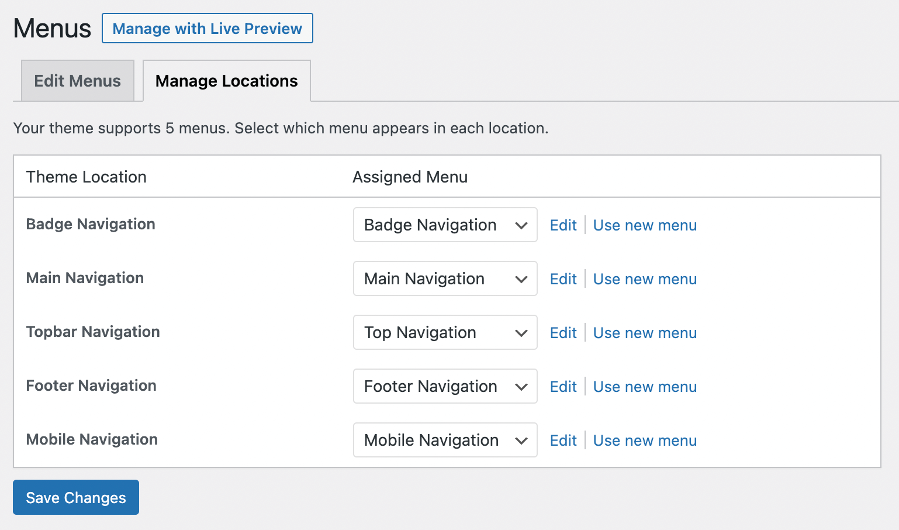
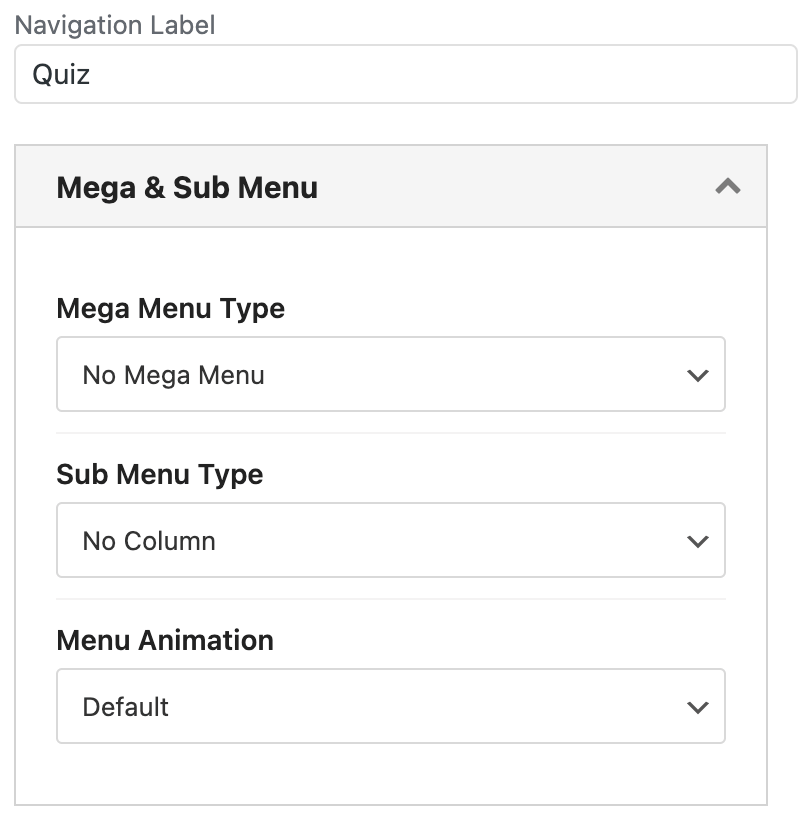
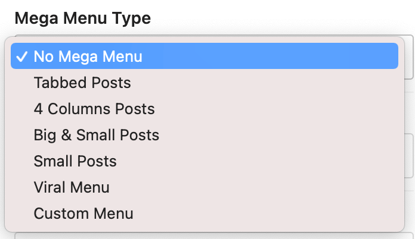
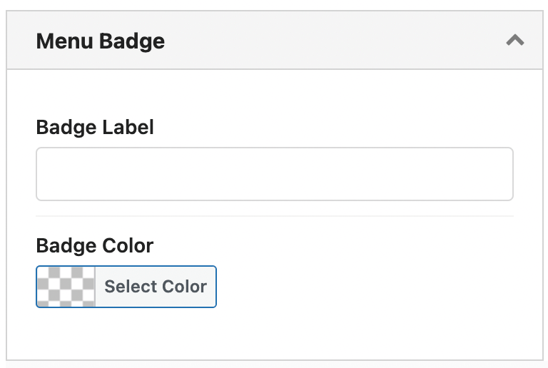

Newsy Menus
Newsy provides you a flexible menu system that always represents your visitors the best menu style and arrangement according to page location and user device. Seven menu locations are available in Newsy. You can create as many as menus you want and select each one of them for each location you want. Newsy menu locations are:
- Top Navigation
- Main Navigation
- Mobile (Off-Canvas) Navigation
- Footer Navigation
- Badge Navigation
First you need to create a menu then assign it to a menu location. Every menu item in a menu has its own options for: selecting Icon & Badge, Color & Style and Responsive Options. Let’s get started with creating a new menu.
How Can I Create a Menu?
For creating a new menu go to Appearance → Menus, here you see something like below image.
- Click on create a new menu button.
- Write a name in Menu Name field. Click on Create Menu button. This name won’t show up anywhere for your visitors and just displaying in your Menus option panel (for now).
-
Now menu is created and you should add menu items to it. Look at
below image, you see tabs on left side. Select your menu items
from this list.
Pages: Select one of your pages for menu item.
Posts: Select one of your posts for menu item.
Custom Links: Create a custom link for your menu item.
Categories: Select one of your categories for menu item.
Tags: Select one of your tags for your menu item.
NOTE: Plugins could add new items to this list. For example bbPress & WooCommerce. -
For example we want to add a category to our menu. Click on
Categories on left side.
All of your categories are arranged in three different way: Most used ones, View All of them and also you can Search among them. After selecting a category click Add to Menu button. If you select more than one category, all selected categories will be added as new menu items.
Now our simple menu is created. We can add new items to it, manage items location, select icon & badge for them and many other options. We will describe them in different parts in this section so keep reading!
Select Menu for Menu Locations
With Newsy, you are provided 5 different locations of menu that you can use on your website.
You can set up these menu locations from WordPress Admin → Appearance → Menus and click Mange Locations tab.
Mega & Sub Menu
We also provide built-in mega menu especially for main menu. With this feature you will be able to show post list on your main menu. You can choose which post will appear on the menu dropdown by using the filter option available.
-
Mega Menu Type
Choose a mega menu type.

- Tabbed Posts
- 4 Columns Posts
- Big & Small Posts
- Small Posts
- Viral Menu
- Custom Menu -
Sub Menu Type
Choose a sub menu columns size. This option will disappear if you select mega menu.
-
Menu Animation
Choose an animation for mega menu or sub menu.
How to Use Icon & Badge for a Menu?

-
Badge Label
Set badge label for menu item. -
Badge Color
Set background color of badge.

- Icon
Set icon for menu item. -
Show Only Icon?
Enable for showing only icon. - Icon Color
Set color of menu icon.
Menu Advanced Options
To find these options go to Newsy → Theme Options → Header → Menu → Menu configuration